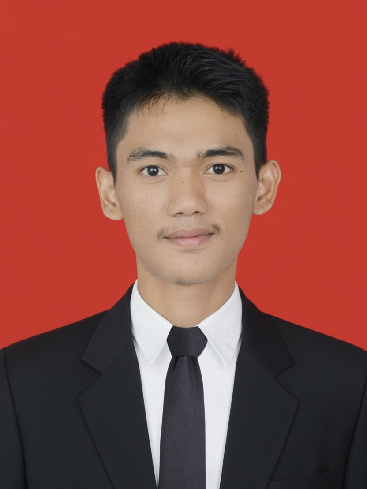

Eki Yogawanto biasa dipanggil Kiyo
Guru muda yang merancang dan membangun solusi digital untuk mempermudah administrasi, pembelajaran, dan layanan sekolah.

Tentang Saya
Mengajar, membuat, dan terus belajar
Saya lulusan Pendidikan Seni Rupa Universitas Negeri Jakarta yang memiliki ketertarikan mendalam pada dunia teknologi dan pengembangan perangkat lunak. Latar belakang seni rupa membantu saya merancang antarmuka aplikasi yang bersih dan mudah digunakan, sementara pengalaman mengajar membuat saya paham betul kebutuhan nyata guru, siswa, dan orang tua di sekolah.
Di Waktu Luang
Latar Belakang
Peran, Pendidikan & Sertifikasi
Guru & Pengelola Layanan Digital
SDS Islam At-Taqwa Rawamangun
Mengajar siswa sekaligus merancang, mengembangkan, dan memelihara ekosistem digital sekolah mulai dari situs resmi & portal terpadu SI-TAQWA, sistem penerimaan murid baru (SPMB), hingga sistem akademik dan penilaian guru.
S1 Pendidikan Seni Rupa
Universitas Negeri Jakarta (UNJ)
Sertifikasi & Kualifikasi
- Certified Teacher (Pendidik Bersertifikat) Sertifikat
- Certified Trainer (Pelatih Bersertifikat) Sertifikat
Keahlian & Teknologi yang Digunakan
Portofolio & Karya
Sistem Digital & Aplikasi Web
Kontak
Mari terhubung
Terbuka untuk diskusi seputar pendidikan, pelatihan teknologi sekolah, maupun kolaborasi pengembangan web.